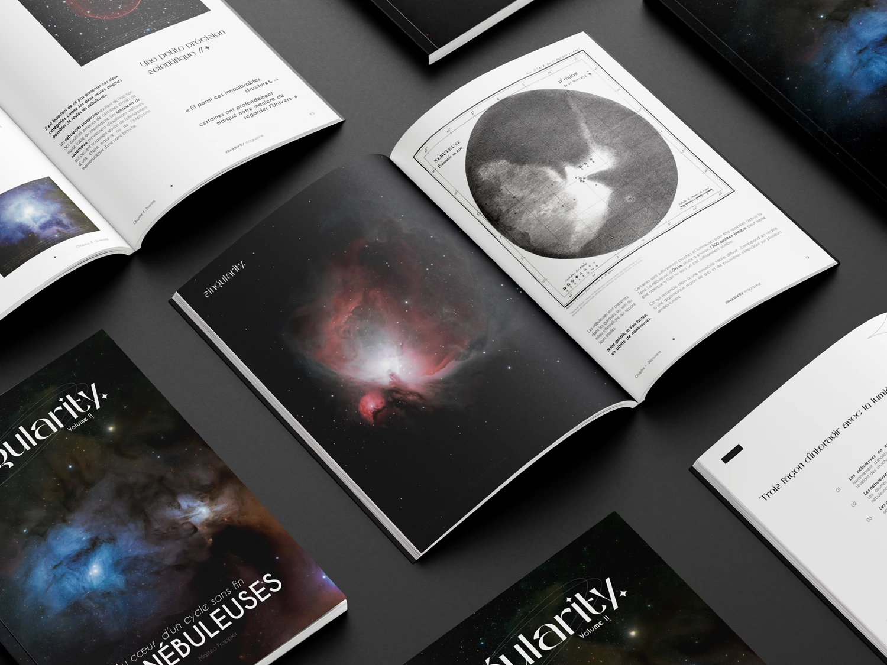
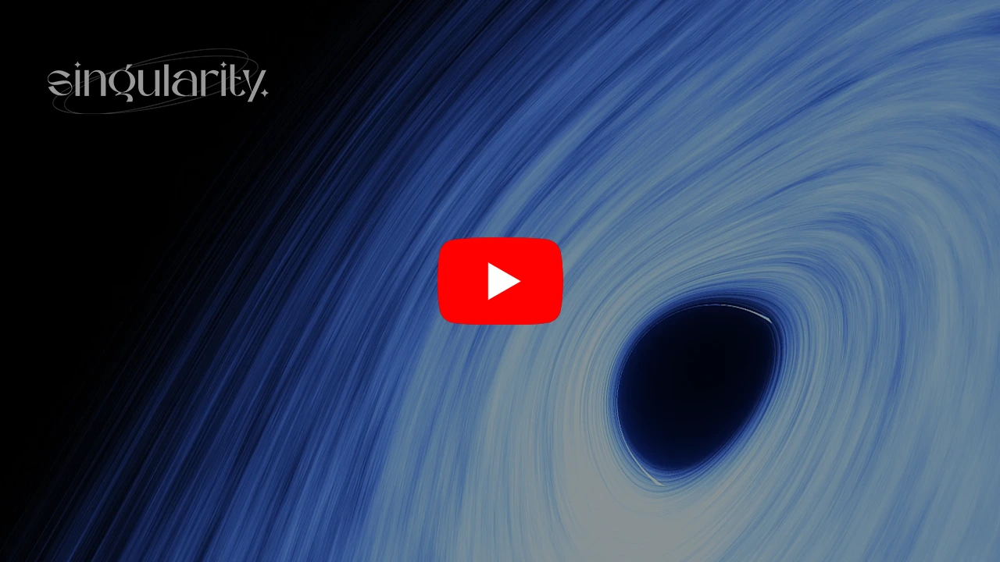
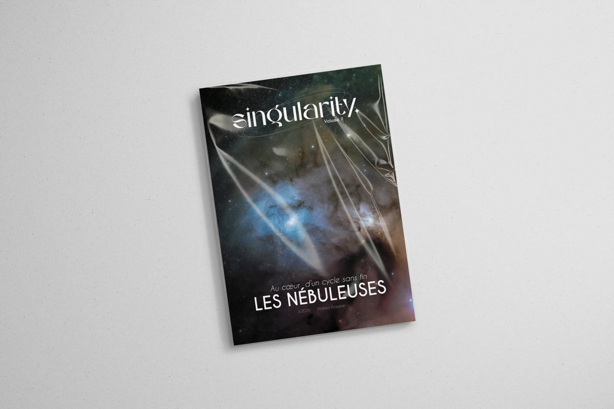
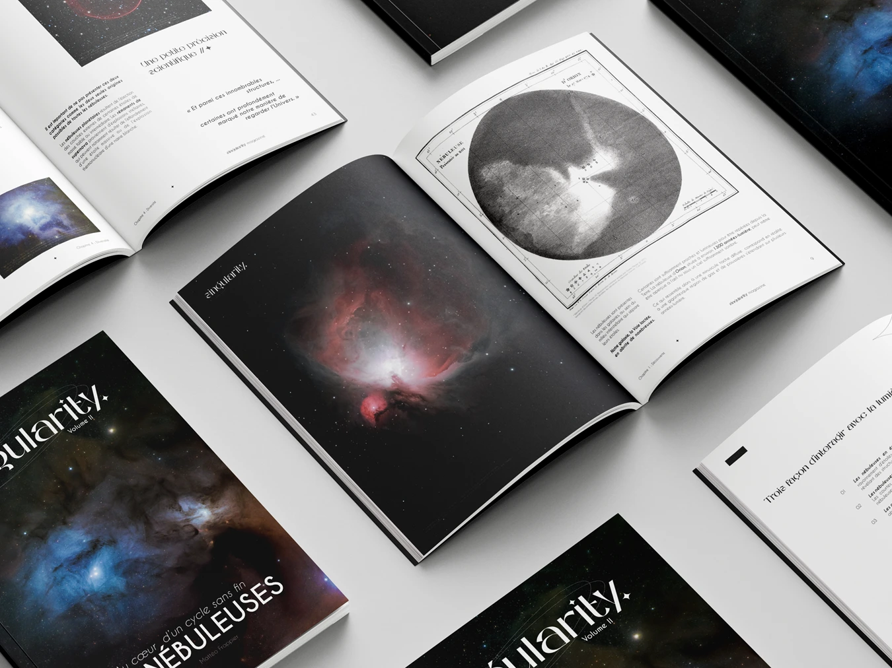
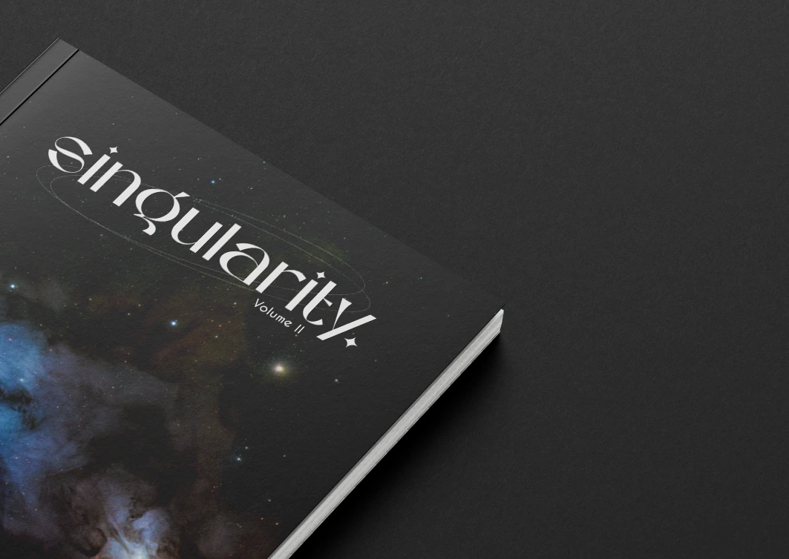
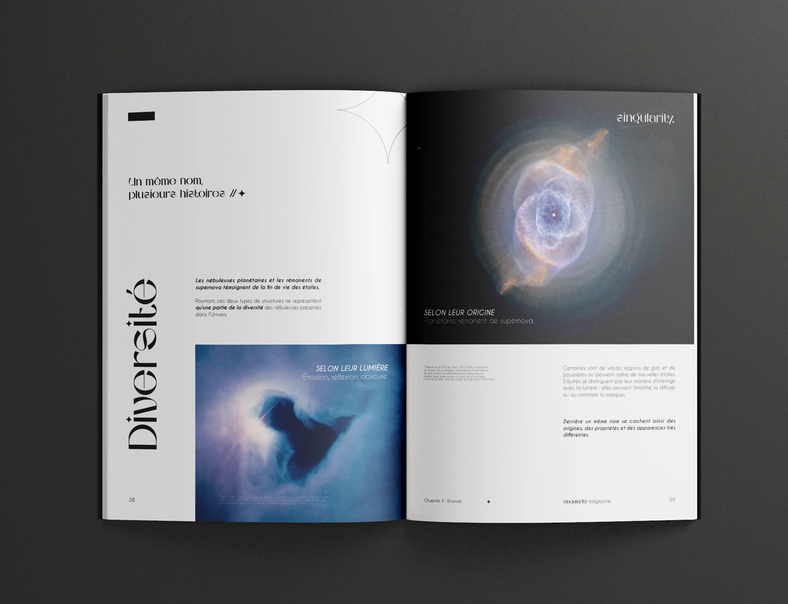
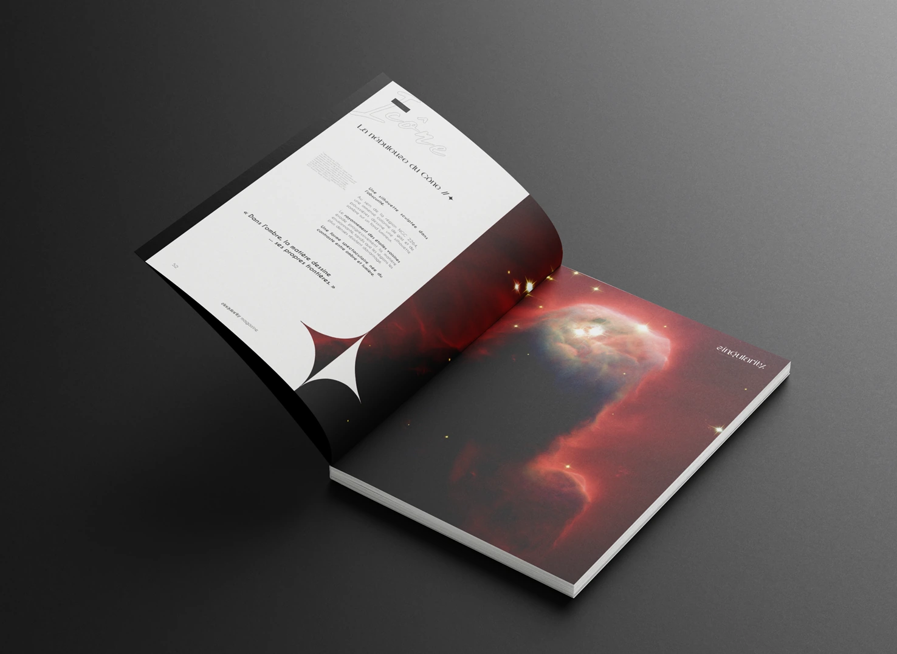
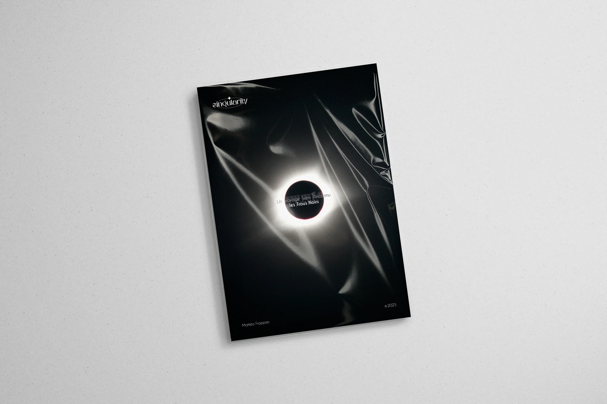
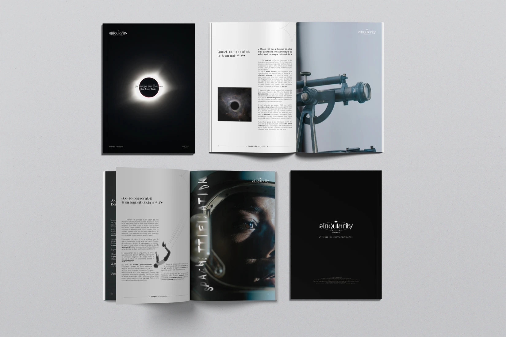
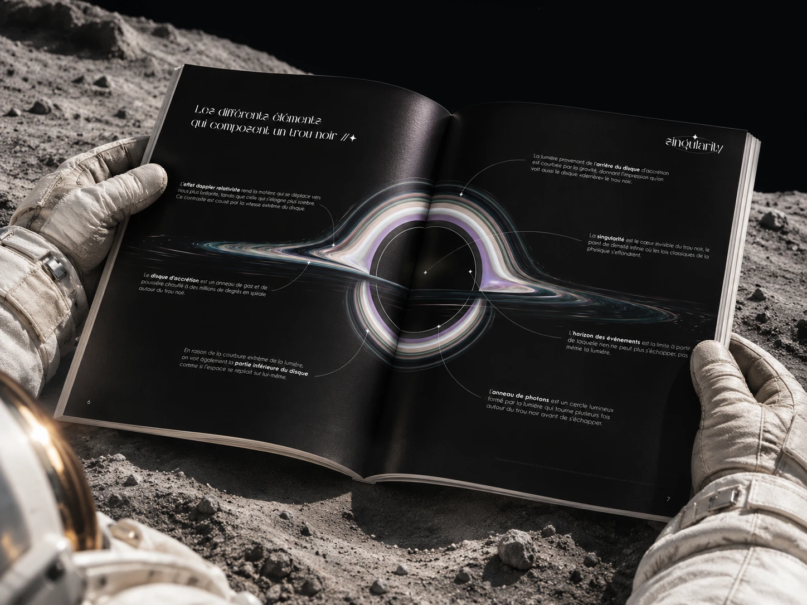

Singularity Magazine
Direction artistique · Branding · Édition · Print · Digital · Motion · Vidéo
ClientSingularity
Singularity Magazine est un projet éditorial de vulgarisation astronomique. Il prend la forme d’une série de magazines dédiée à l’espace, avec une identité visuelle pensée pour rendre des sujets complexes accessibles, sensibles et visuellement forts.
Le Volume I, consacré aux trous noirs, associait contenus pédagogiques, infographies et mise en page éditoriale sur une vingtaine de pages.
Avec la sortie du Volume II, dédié aux nébuleuses, le projet prend une nouvelle dimension : une légère refonte de l’identité et de la maquette renforce la cohérence entre les volumes, tandis que le format gagne en ambition, passant d’une vingtaine de pages à plus de 70. Une évolution pensée pour enrichir l’expérience de lecture sans perdre l’ADN de Singularity.








